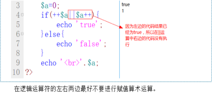

Pday4-PHP基础4（类型转换,运算符,分支结构）
一、PHP类型转换，必须是同类型才能运算
变量类型转换分：自动转换和强制转换。//使用时注意了：（）包括在int上，如(int)4.5; //结果4
1、强制转换 注意：结果不是对原来变量自身进行重新赋值，所以要将其赋值给一个变量。
1.1 setType($a,"bool");//方法1：强制转为布尔型 echo getType($a);获取类型。
1.2 (int) $a ，强制转成整型；(string)$a ，强制转成字符串；(object) $a ，强制转成对象；
(bool) $a ，强制转成布尔值；(float) $a ，强制转成浮点型；(array) $a ，强制转成数组型
例：1.$a="100px";2.$z=(int)$a; 3.echo $a."<br>",$z;//结果100px 100---强制转换未改变原变量自身
不能将一个变量转换为特殊类型如(null)$a;或(resource)$a会报错
2、其他类型转换为布尔型：0,'','0',null,array(),空对象转换为布尔型结果都是false，其他都是true
3、其他类型转换为整型： int()相当于JS中的parseInt()，例int(100abc);//结果100 int(abc100);//结果0
4、其他类型转换为浮点型：相当于JS中的parseFloat()，$a=(float)'1.23.45';//结果1.23，第二个.及其之后数值会舍去
5、其他类型转换为字符串型：3个特殊：$a=(string)true;//结果1，$a=(string)false;//结果""，$a=(string)NULL;//结果""
二、进制介绍---计算机底层的数据运算和存储的都是二进制数据
一个8进制数，可以用3个二进制数，来表示。如：(567)8 《=》 (101 110 111)2 可互转，不足位取零
一个16进制数，可以用4位二进制数，来表示。如：(A23)16 《=》 (1010 0010 0011)2
二进制bin,八进制oct,十进制dec,十六进制hex。
十进制转换为二进制、八进制、十六进制---decbin、decoct、dechex,其他进制与十进制相互转换也类似：两两组合
echo decbin(10);//结果1010 echo hexdec('1A');//结果是十进制数26 echo dechex(6789);//1a85
注意：二进制无法直接转换为八进制。以上函数只能是十进制和其他进制之间的转换，其他进制相互之间没有函数进行转换。
所以要先将其转换为十进制数，然后再进行转换。例：echo decoct(bindec(100111011));//结果473
三、ASCII编码：就是将字符转换为二进制进行存储的一种国际编码表。
1、至今为止一共定义了128个字符编码。
2、ASCII编码表都是按照顺序进行存储的
3、小写字母比大写字母大，相同字母大32。A对应的十进制是65，a是97。
ASCII字符集：0-9、标点符号、A-Z、a-z。
四、运算符
1、算术运算符：二元运算符 （+、-、*、/、%）、一元运算符（++、--）
算术运算符的运算结果，一定是数值型。
类型转换：如果两边的操作数不是数值型，要先转成数值型，再进行算术运算。
取余%结果跟被除数有关，不是整数要转成整数。var_dump(9.8%3);//int(0),echo 10%-3;//结果1，echo -10%-3;//结果-1
“++”有两种用法：作前缀(++$a)、作后缀($a++)。
（1）如果单独使用，则$a++和++$a结果一样（2）如果和其它表达式混在一起，则$a++和++$a结果不一样。
例：$a=6; $b=$a++ + $a++ + $a++;//6+7+8=21 ---先赋值后运算，
再如$a=10;$b=$a+++10;//$a:11,$b=20(先计算第3个+，$a+10，然后$a++，特殊：这里++在表达式里优先级较+低)
$c=++$a + ++$a + ++$a;//10+11+12=33---先运算后赋值
2、赋值运算符：=、+=、-=、*=、/=、%=
“=”赋值运算符：将右边运算结果，装到左边变量中；
$a++和$a+=1是否一样？ 不一样，对于数值型都是$a自身+1；但是对于字符串，$a++相当于在原有ASCII编码的基础上+1；如$a="z";$a++结果为az。
3、字符串运算符（. 和 .=）“.”字符串连接运算符：$a = $b."abc"; “.=”字符串连接：先连接后赋值。
4、比较运算符：>、<、>=、<=、==、!=、===、!==
重点：比较运算符的运算结果，一定是布尔值。比较运算符优先级：布尔》数字》字符
“=”赋值号，左边只能是变量名，不能是运算表达式，$a+10=200;是错误的！
“==”，等于(模糊比较)。判断值是否相等，不管类型。“===”，全等于(严格比较)。同时比较类型和值是否相等。
“!=” ，判断值是否相等，不管类型。“!==” ，既判断值是否相等，还管类型是否一致。
字符串比较：两个ASCII字符串相比，按每个字符的ASCII值，进行大小比较。如比较”Bao”和”ao”的大小a的97大于B的66。
5、逻辑运算符：&&、||、!
一定要小心逻辑短路的情况！！！
当&&运算符左边为假，或者||运算符左边为真，那么结果就已经确定，php为提高代码运行效率，右边代码被短路不执行。

6、条件(三元)运算符 例：$a=10;$b=20; ①$max=$a>$b?$a:$b;//20
②$max=$a>$b?$a:$b?$b:$a;//20 三元套三元，从左到右 ③$a>$b?echo $a:echo $b;//error三元运算符里不能放输出语句，否则报错
7、运算符优先级

8、错误控制运算符(@)，主要用来屏蔽表达式的系统错误。
可以用来屏蔽常量、变量、函数调用、include语句。 一般在项目开发阶段不用而在项目上线阶段使用错误运算符。
$link=@mysql_connect("localhost","root","123456");//@符号，常用在屏蔽连接数据库的错误
五-1、分支结构(if)
1、只判断TRUE，不管FALSE if(){}
2、既判断TRUE，也判断FALSE if(){}else{}
3、多条件判断（多选一） if(){}elseif(){}elseif(){}……else{}---在PHP中elseif中间最好不加空 格
五-2、分支结构（switch）
switch(变量){
case 值1：执行代码1； break；
case 值2：执行代码2； break；
case 值3：执行代码3； break；
default:默认执行代码；}
六、date()函数：格式化一个本地时间／日期，语法：string date ( string $format [, int $timestamp ] )例date('Y-m-d H:i:s',$time);
参数：$format，要格式化的字符串；$timestamp可选。代表要传递的时间戳。默认为当前时间戳。
$week=date("N");//1～7,取出系统时钟的星期值 echo date("U");// 1483616748返回Unix纪元1970-1-1 08:00:00到当前秒数。=time()
echo date('c');// 2017-01-05T19:45:48+08:00 echo date("Y-m-d H:i:s");// 2017-01-05 19:45:48
$today=getdate();//函数返回一个数组，echo $today['year'];//结果2017
$nextWeek=time()+(7*24*60*60); //当前时间戳:1483618853
echo "一周后日期时间为".date('Y-m-d H:i:s',$nextWeek)."<br>";//一周后日期时间为2017-01-12 20:20:53时间戳转日期
echo "2038-1-19 11:14:07的时间戳".mktime(11,14,8,1,19,2038);//2038-1-19 11:14:07的时间戳2147483647